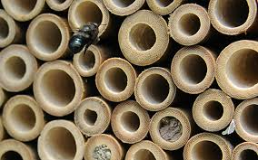
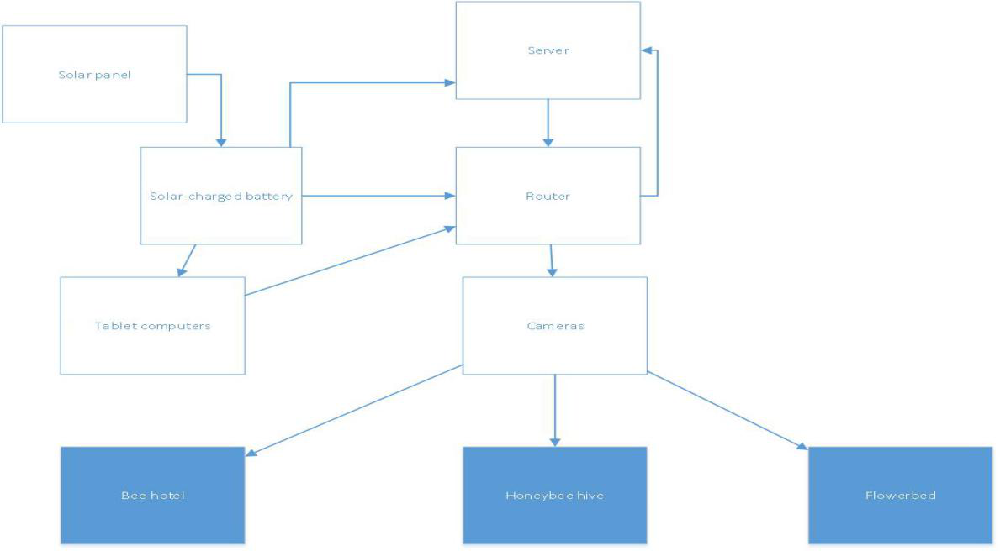
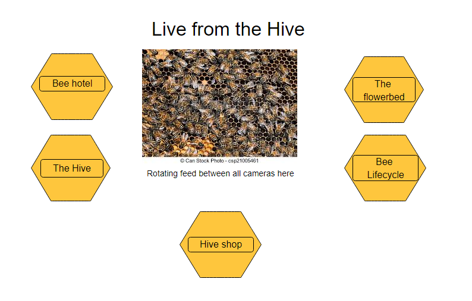
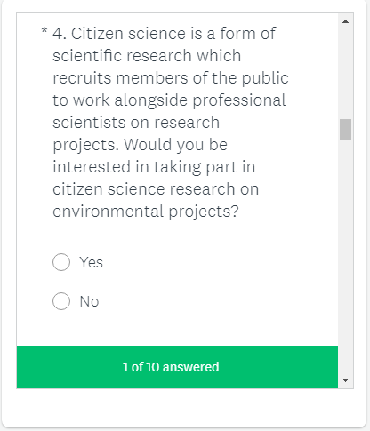
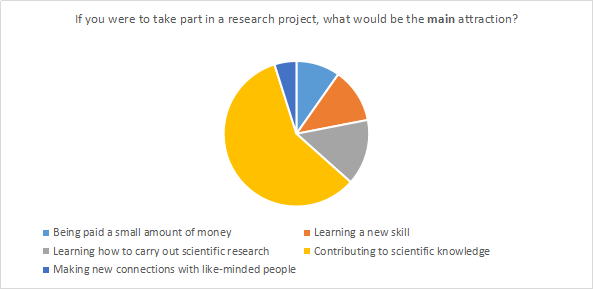
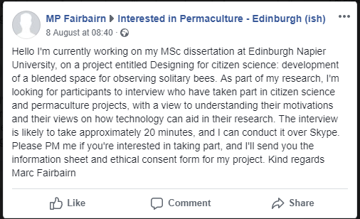
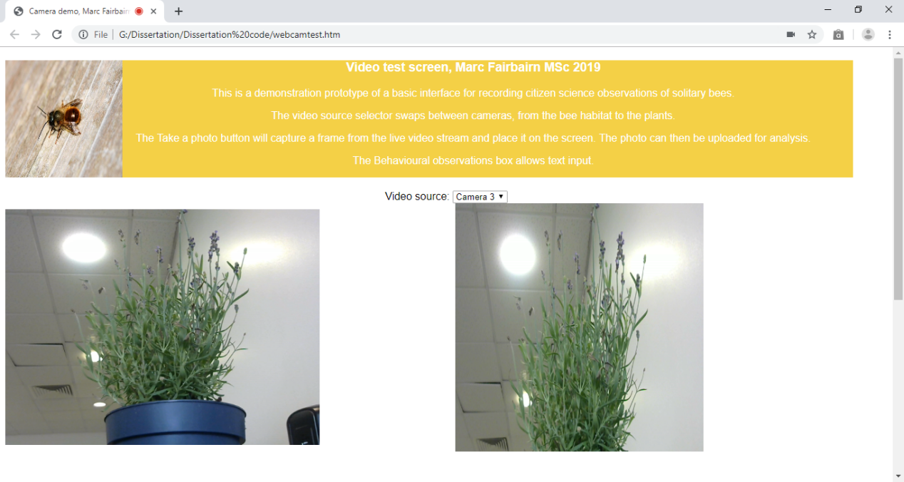
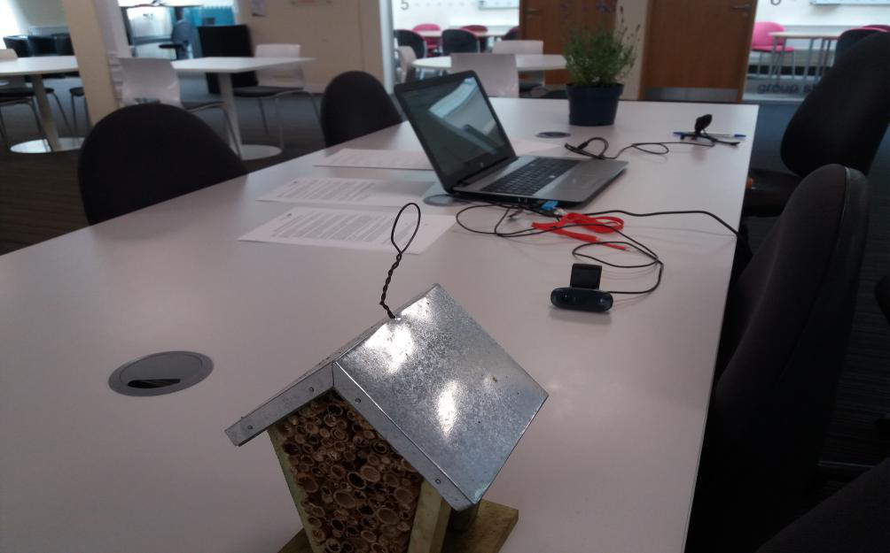
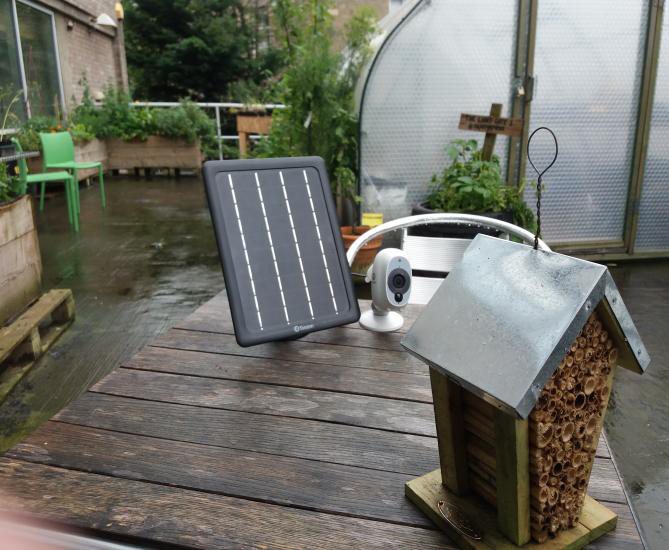

developing a blended space for observing solitary bees
This is the research I carried out for my dissertation, completing my MSc in Computing (User Experience) at Edinburgh Napier University in the summer of 2019.
My dissertation was based on an initial conceptual study I'd done to design for the university's Lions' Gate sustainability garden. I'd looked at how to attract visitors to the garden's website by designing an environmentally sustainable system for rigging a beehive with cameras, streaming a live feed to the Web.
At the time, the primary aim was to use the interface as an educational tool, but also as a source of revenue via the bees' wax and honey.
When I came back to this idea, I realised that I had two major issues that I needed to resolve. Firstly, I didn't have the knowledge or the time to build and maintain a honey bee hive. Secondly, how was I going to get people to visit the site more than once as a novelty?
I came up with two solutions to my issues. I solved the bee problem through learning about bee species, and understanding that some species are solitary and don't need to live in large hives. The solution to generating repeat visits came from reading about how people can get involved in environmental causes, and this led me to the subject of citizen science - members of the public recording scientific data in collaboration with researchers.
 I ran a short survey on SurveyMonkey to establish how much people knew about citizen science, and what would motivate them to get involved. It wasn't a subject people tended to know much about, but respondents were enthusiastic about the idea and about taking part when the concept was explained. I also designed a short interview slate for use with participants in citizen science and in permacultural garedning, to get an understanding of how to support their work with my research.
With confirmation from the survey that there would be public interest in observing and recording for citizen science, I designed a prototype digital and physical space in which this might be done.
My portable prototype's digital space consisted of a simple front end website, which streamed video from two webcams plugged into my laptop. The interface controls allowed participants to capture screenshots and to record written observations about bee behaviours.
The prototype's physical space, which I used for discount usability testing, focused the cameras on a pot plant of the kind which would attract solitary bee species and on a bee hotel habitat of the kind occupied by these species. I used this layout with volunteer participants, recording their responses on a Likert-scaled questionnaire with space for free written observations.
I also carried out the physical space design for locating the system in the Lions' Gate garden, using household security cameras and solar panels.
My main findings were that while public knowledge of citizen science and permaculture is limited, there is a public interest in participation where time is not a constraining factor. I also found that if you're trying to get qualitative data from a relatively niche community, it's important to develop a relationship well in advance of doing so; I couldn't get interview participants to take part before my final write-up. Finally, my discount usability engineering work established that interfaces have to be designed with aesthetic concerns in mind as well as functional ones; the prototype was simple and usable, but not overly attractive.
My work on this research earned me a high passing grade for the dissertation section of my MSc.